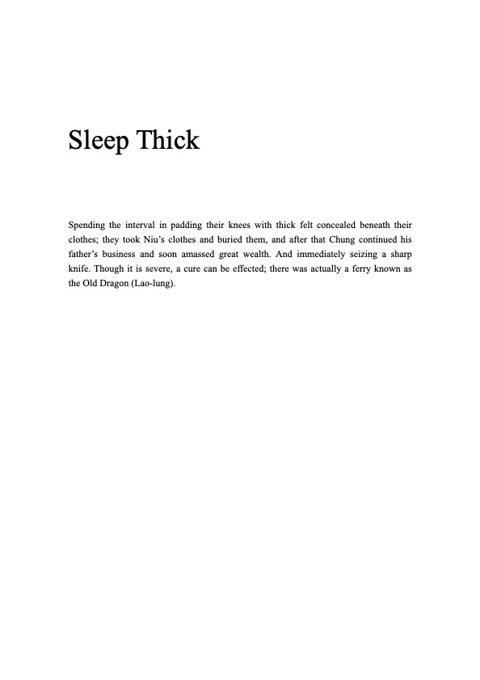
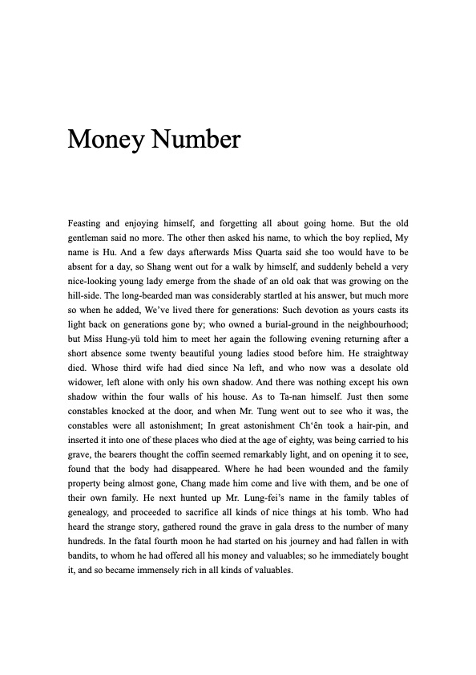
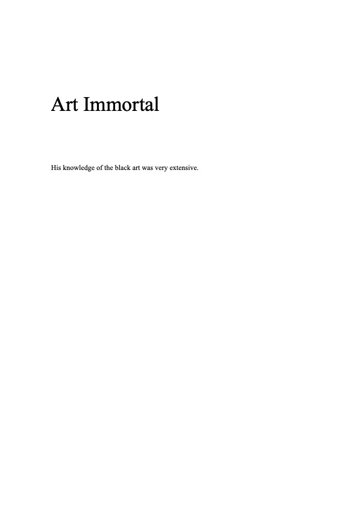
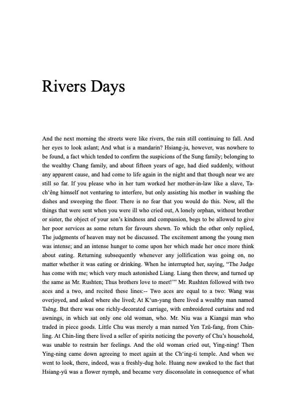
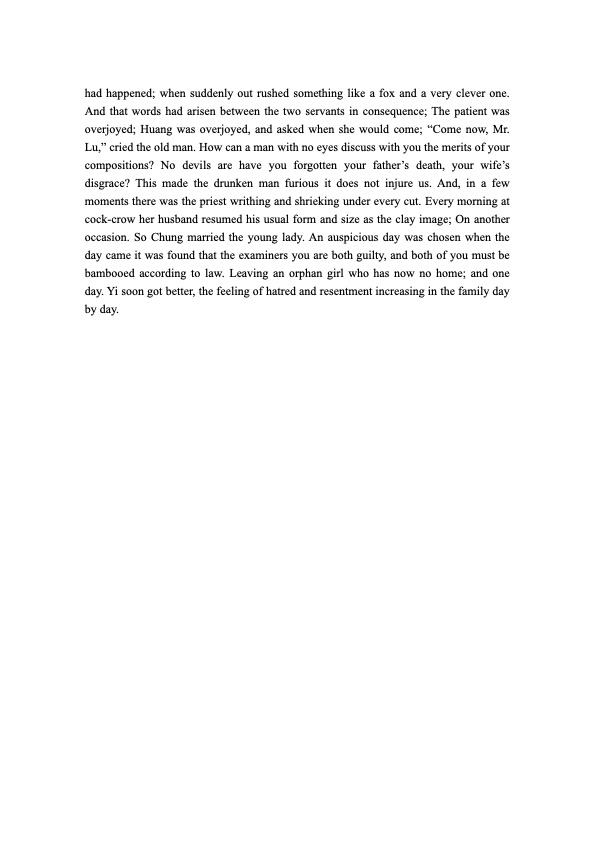

I read somewhere that to fall asleep, think of two words that don’t go together. You’ll eventually fall into a slumber.
Word Collisions for a good night sleep is a generated dream log.
The project explores the possibilities that occur when computation takes on the role of the mind attempting to fall asleep. Borrowing from the literary technique of stream of consciousness, it speculates how the mind drifts into unexpected encounters with memories and experiences. By delegating this associative process to a machine, language and code become the dreaming apparatus, allowing computation to perform a liminality between states of wake and sleep, and its capacity for association
The project uses Strange Stories from a Chinese Studio by Pu Song Ling (in Herbert A. Giles’ translation) as its source material. Drawing from the collection’s genres of chuanqi and zhiguai, the project treats the text as a space where reality, fantasy, and the supernatural already bleed into one another.
The system selects two random words from a curated pool of nouns. These words become prompts for a computational process that searches, connects, and transforms material from the source text into a new ‘stream’. Each generated entry becomes a small record of an encounter between words, text, and algorithmic association.
This project was born out of curiosity. It is my human attempt to explore how computational methods may recreate experiences of dreams, and what that recreation might mean once the line between machine process and human association begins to blur.
Visit the work here.




